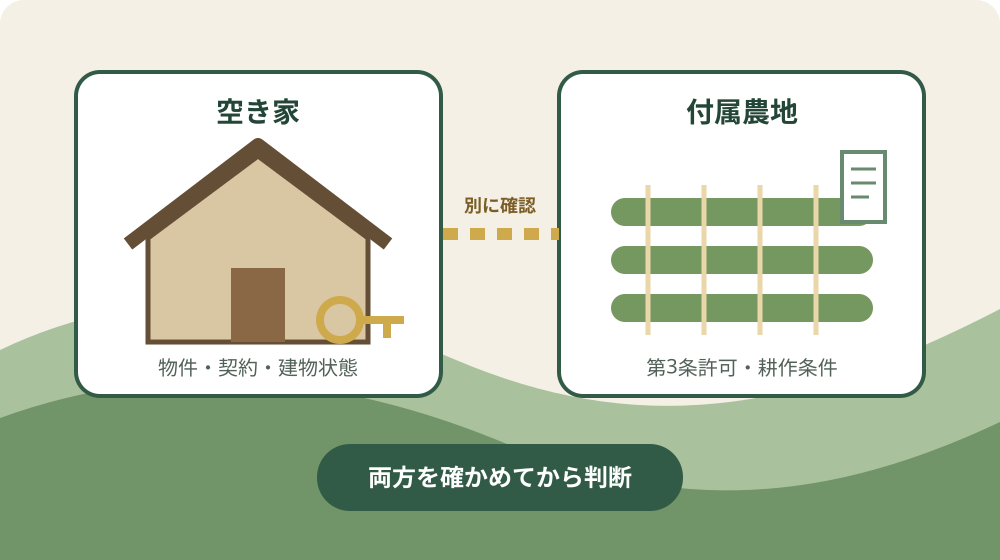
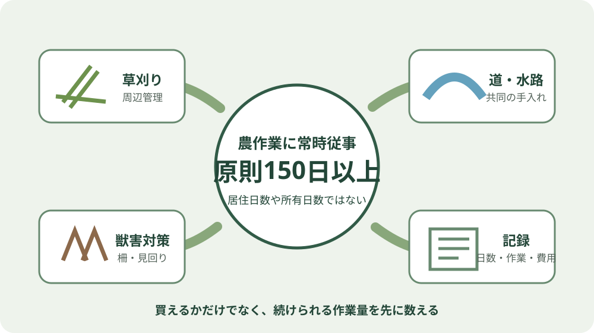

森町の空き家付き農地｜普通の農地取得と比較
この記事の表紙は、内容をもとに生成したイメージです。実在する場所・人物・物件を撮影したものではありません。
この記事の要点
Q. 森町の空き家と付属農地は、普通の農地より簡単に買えますか。
A. 下限面積は2023年4月1日に撤廃されましたが、農地法第3条の許可基準は残ります。原則150日以上は権利取得希望者や世帯員等の農作業常時従事で、居住日数ではありません。契約を決める前に、空き家と農地を別々の窓口で確認します。
森町の空き家を探していると、住宅の隣に畑が付いた物件が候補に入ることがあります。家のすぐ横で野菜を育てられる暮らしは魅力的です。
ただし、宅地と農地は同じ売買資料に載っていても、同じ扱いにはなりません。
迷いやすいのは、「空き家付き農地」という名前から、普通の農地より簡単に取得できる特別な仕組みを想像してしまうことです。
森町公式ページを読む限り、空き家に付く農地だから農地法第3条の許可基準が免除される、とは書かれていません。
森町公式の「空き家付き農地の取得について」は、2026年4月1日に更新されました。
ページには、2023年4月1日に農地法第3条の許可要件にあった下限面積が撤廃されたことと、それ以外の許可基準を守る必要があることが並べて記されています。
この記事では、空き家付き農地と普通の農地取得について、違う点より先に共通する条件を整理します。
購入後の草刈り、道、水路、鳥獣対策まで見てから、家族が今日できる確認を一つに絞ります。
森町の空き家付き農地は、何が普通の農地と違うのか
森町の空き家付き農地は、住宅と農地を一緒に検討できる物件であって、農地の法的な扱いまで宅地に変わるものではありません。
住宅は住宅、農地は農地として、担当窓口と確認事項を分ける必要があります。
違いとして見えやすいのは、住宅と小さな農地を一組で探す人にとって、候補を見つけやすくなったことです。
森町公式ページも、「農地と宅地をセットで売買したい」人にとって農地を取得しやすい形になったと説明しています。
一方、取得の入口にある農地法第3条の確認は消えていません。
農地を農地として取得するなら、空き家バンクに載っているか、住宅の隣にあるか、小面積かという事情だけで許可が決まるわけではありません。
空き家バンクの役割も分けて考えます。町へ物件を登録しただけで、町が売買契約や農地の許可を代わりに終えてくれるものではありません。
登録する側の仕組みは、森町の空き家バンクは、登録すれば町が売ってくれる制度ではないで確認できます。
買う側では、販売価格、建物の状態、道路、上下水道、境界、残置物に加えて、農地の地番と地目を確認します。
空き家バンクを利用する買主側の順番は、空き家バンクで森町へ移住するとき、価格より先に確認したいことにつなげています。

2023年に消えたのは下限面積で、許可ではない
2023年4月1日に撤廃されたのは、農地法第3条の許可要件にあった下限面積です。
面積が小さいことだけを理由に取得の入口から外れる仕組みはなくなりましたが、第3条の許可そのものがなくなったわけではありません。
ここは意外な事実です。面積条件がなくなったと聞けば、小さな家庭菜園用地なら住宅と同じように買えると受け取りやすい。
しかし森町公式ページは、下限面積撤廃の説明に続けて、許可基準はこれまでと同様に守る必要があると注意しています。
したがって、「小さい農地だから許可はいらない」という読み方はできません。
「空き家に付いているから例外になる」という説明も、確認した森町公式ページにはありません。物件広告の表現と農地の許可要件は切り分けます。
面積条件の撤廃には意味があります。住宅に付く小さな畑を使いたい人が、面積だけで取得を断念する場面は減ります。
ただし、取得後に誰が耕すのか、ほかの農地を含めて利用できるのかという問いは残ります。
売買の話が進んでから条件を知ると、売主、買主、仲介する事業者の全員が予定を組み直すことになります。
内覧時点で農地の地番を拾い、農業委員会事務局へ相談する方が、結果として双方の負担を小さくできます。
普通の農地取得と共通する六つの許可基準
森町公式ページは、農地法第3条の許可要件として六つの項目を挙げています。空き家付き農地についても、普通の農地取得と同じ基準として読みます。
一つ目は全部効率利用要件です。申請する農地だけでなく、すでに所有している農地や借りている農地のすべてを効率的に耕作することが求められます。
新しく買う畑だけを見ればよいという条件ではありません。
二つ目は農地所有適格法人要件です。法人が農地を所有する場合は、農地所有適格法人の要件を満たす必要があります。
個人の移住希望者向けの記事なので詳説はしませんが、法人名義を考える場合は別途確認が要ります。
三つ目は信託の禁止です。信託の引き受けによる権利取得はできないと案内されています。
家族間の財産管理で信託を使っている場合も、住宅と農地を一括して同じ方法で扱えるとは限りません。
四つ目は農作業常時従事要件です。森町公式ページは、権利取得希望者や世帯員等が農作業に常時従事し、原則150日以上である必要を示しています。
五つ目は転貸の禁止です。転貸や質入れをする場合は許可できないとされています。
自分では耕さず、取得直後から別の人へ貸す前提なら、希望する使い方と許可基準が合うかを先に相談する必要があります。
六つ目は地域との調和要件です。周辺の農地利用に影響を与えないことが求められます。
自分の区画だけ草を刈れば終わる話ではなく、水路、農道、隣接農地との関係も取得判断に入ります。
この六項目を見ると、普通の農地取得と空き家付き農地の共通部分がはっきりします。
住宅と一緒に紹介されていても、農地を継続して使える人と体制が問われます。物件名より、取得後の実行可能性が先です。
原則150日以上は、森町に住む日数ではない
森町公式ページの原則150日以上は、権利取得希望者や世帯員等が農作業に常時従事する要件です。
森町に150日滞在すれば足りる、という居住日数の条件ではありません。農地の所有日数や維持期間でもありません。
この数字を「週末に少し通えば大丈夫」と軽く置き換えるのも危険です。
確認したページには、どの作業を何日として数えるか、家族の従事日数をどのように確認するかまでは掲載されていません。
仕事を続けながら移住する方、二拠点で暮らす方、家族の一人だけ先に移る方では、農作業へ割ける時間が違います。
世帯の予定表に、耕起、植え付け、草刈り、収穫だけでなく、水路や周辺管理も書き出す必要があります。
私は、150という数字だけで「できる」「できない」を決めるのも早いと考えます。
農地の広さ、作目、斜面、接道、水の取り方、獣害の有無が分からなければ、日数と実際の負担を結び付けられないからです。
相談時には、「会社員ですが取得できますか」と広く聞くより、「この地番の農地を、世帯の誰が、どのように耕す予定です」と伝える方が具体的です。
原則の適用や必要書類は、森町農業委員会事務局へ個別に確認します。

買った後は、畑だけでなく道と水路も管理する
森町農業委員会事務局の「農地を取得するに当たっての注意点」は、取得後の日常管理を具体的に示しています。
草刈り、道や水路の清掃、地域の作業、鳥獣への備えまでが挙げられています。
草刈りは、自分の収穫量だけの問題ではありません。雑草が隣地や道路へ広がれば、周辺の住民や耕作者へ負担が移ります。
遠方から通う計画なら、繁茂する時期に誰が現地へ行くかを決めておきます。
道と水路も物件の外側に見えますが、農地利用と切り離せません。
補足資料は、農地だけでなく道や水路も定期的に清掃し、水路掃除や草刈り等の地域行事へ参加するよう案内しています。
山間部等では、イノシシやシカによる食害の可能性も示されています。
電気柵を設置する場合は、本体価格だけでなく、草刈り、通電確認、破損時の補修を誰が担うかまで考えます。
農地を宅地、駐車場、資材置場など農地以外の目的で使う場合は、農地転用の許可が必要です。
無断転用や許可された事業計画と異なる利用には、工事中止、原状回復等の命令、罰則の可能性があると補足資料は注意しています。
「耕せなくなったら駐車場にすればよい」という逃げ道を、購入前から当てにしない方が安全です。
農地として持つ場合と、転用を検討する場合では確認が別になります。土地ごとの判断は担当窓口へ照会します。
良い点：小さな農地を住まいと一緒に考えやすくなった
空き家付き農地の良い点は、小さな農地を住宅と一緒に使いたい人が、面積だけで入口から外れなくなったことです。
森町公式ページも、移住・定住者が新たな耕作者となり、新規就農を促す目的を示しています。
住まいと畑が近ければ、移動時間を抑えられる可能性があります。
毎日の見回りや短時間の草取りを生活に組み込みやすいことは、離れた農地を管理する場合との違いになります。
ただし実際の距離と道路状況は物件ごとに確認します。
町が空き家と農地の相談窓口を分けて掲載している点も良いところです。
空き家は定住推進課移住交流係、農地は森町農業委員会事務局です。どこへ聞けばよいか分からない状態から、一歩進めます。
取得後の注意点も、草刈りだけでなく道、水路、鳥獣、転用まで一枚の資料にまとまっています。
負担を隠さず示しているため、購入前に家族の時間と費用へ置き換えられます。
注文したい点：物件情報だけでは負担を判断できない
空き家付き農地の案内に注文したいのは、原則150日以上の具体的な数え方がページだけでは分からないことです。
読者が最も迷う数字なので、相談時に何を伝えれば判断しやすいかまで例示されると使いやすくなります。
農地の面積、地番、現況、農道、水路、地域作業、獣害の情報も、物件ごとに同じ粒度で並ぶとは限りません。
空き家の間取りと価格だけが先に見えると、農地の維持負担が後から出てきます。
良い景色や家庭菜園の写真は、暮らしを想像する助けになります。
しかし写真からは、境界、水の取り方、草刈りの範囲、農機具の搬入経路までは分かりません。現地確認では農地側にも時間を割く必要があります。
町の人や周辺の耕作者は、すでに水路清掃や草刈り、鳥獣対策へ時間と体力を払っています。
移住する側が「田舎なら自由に畑を使える」と受け取ると、その負担を既存の担い手へ残してしまいます。
私は、移住者へ条件を厳しく見せたいわけではありません。
買った後に続けられず、売主、買主、隣接農家の全員が困る方が避けたい。取得前に負担を見える形へ直すことが、結果として移住の失敗を減らします。
対案・結論：家と農地を二枚の確認表に分ける
空き家付き農地を検討するときは、家と農地を二枚の確認表に分けます。
家の表には価格、建物の状態、道路、境界、上下水道、残置物を記録します。
農地の表には地番、地目、面積、現況、水路、農道、管理者を書きます。
空き家側は定住推進課移住交流係へ相談します。電話番号は0538-85-6321です。
町の空き家バンクにおける物件情報の位置付けと、住宅側で必要な確認を分けて聞きます。
農地側は森町農業委員会事務局へ相談します。電話番号は0538-85-6315です。
農地の地番を手元に置き、第3条の許可相談と原則150日以上の扱いを確認します。
2026年9月3日にできる小さな一歩は、物件資料から農地の地番を一つ書き出すことです。
その番号を使い、「この地番は農地法第3条の相談対象ですか」と農地管理係へ聞けば、購入を決めずに判断材料を一つ増やせます。
すでに家族が農地を相続している場合は、売買による取得とは手続きが異なります。
相続後の届出は、田んぼや畑を相続したら、登記だけで終わりではないで分けて確認してください。
将来の耕作者が地域でどのように描かれているかは、森町の地域計画と目標地図も材料になります。
地番と計画上の表示を見る順番は、森町の地域計画と目標地図、10年後の耕作者を確かめるにまとめています。
家族に残す記録
家族用の記録には、宅地と農地の住所・地番を分けて書きます。
登記名義、固定資産税の資料、境界資料、接する道路、水路の位置、現在管理している人の連絡先も一緒に残します。
農地については、作っているもの、最後に耕作した時期、草刈りの頻度、農機具の保管場所、地域作業の連絡先を記します。
分からない項目は空欄にせず「未確認」と書けば、次に聞く内容になります。
家族の誰が農作業へ関われるかも、名前と時間で記録します。「家族でやる」だけでは判断材料になりません。
平日、休日、繁忙期、遠方からの移動を分けると、原則150日以上の相談で伝えやすくなります。
大石の視点：今日は買わなくていい
大石浩之（磐田市／不動産業）として、私はこう考えます。空き家付き農地の判断で先に見るのは、田舎暮らしの理想でも査定額でもありません。
道路、境界、地目、農地の許可、維持費、誰が動くかの順です。
誰が150日動くのかも分からないまま、田舎暮らしの勢いで買うのは止めた方がいい。今日は買わなくていい。地番と窓口だけ控えれば十分だ。
これは売らない、買わないという結論ではありません。
家族が半年後に買う、借りる、別の物件を探す、検討をやめるというどの道を選んでも、地番と許可条件を確認した記録は無駄になりません。
私自身、移住の入口を広げる利点と、農地を守る条件をどう並べるかは迷います。
条件ばかり強調すれば挑戦する人を遠ざけます。魅力だけを書けば、草刈り、水路、担い手の負担を町の人へ押し戻します。
だから、良い点を認めたうえで負担を具体名詞にします。
原則150日、草刈り、農道、水路、鳥獣、転用、窓口です。抽象的な不安ではなく、確認できる項目へ変えれば、決断を急がず前へ進めます。
まとめ：最初に農地の地番を一つ確認する
森町の空き家付き農地は、下限面積が撤廃されたことで小さな農地を住宅と一緒に検討しやすくなりました。
ただし、農地法第3条の許可基準まで撤廃されたわけではありません。
原則150日以上は、権利取得希望者や世帯員等が農作業に常時従事する要件です。
森町への居住日数ではありません。空き家付きだから免除されるという説明も、確認した森町公式情報にはありません。
購入を今日決める必要はありません。
物件資料から農地の地番を一つ拾い、農地管理係へ相談対象かを聞く。それだけで、家族は広告の印象ではなく、確認済みの事実から次を選べます。
よくある質問
Q1. 森町の空き家付き農地は、普通の農地より簡単に買えますか。
A1. 2023年4月1日に農地法第3条の下限面積は撤廃され、小さな農地を検討しやすくなりました。ただし、第3条の許可と、全部効率利用、農作業常時従事、転貸禁止、地域との調和などの許可基準は残ります。空き家付きだから免除されるとの記載はありません。
Q2. 原則150日以上は、森町に住まなければならない日数ですか。
A2. 居住日数ではありません。森町公式ページは、権利取得希望者や世帯員等が農作業に常時従事し、原則150日以上である必要を示しています。作業日の数え方や個別の適用はページに詳述されていないため、農地の地番と営農予定を添えて農業委員会事務局へ確認します。
Q3. 空き家と付属農地は、どこへ相談すればよいですか。
A3. 空き家は森町役場定住推進課移住交流係、電話0538-85-6321です。農地は森町農業委員会事務局、電話0538-85-6315です。同じ物件でも相談先を分け、農地側には地番、面積、現在の利用、取得後に耕す人を伝えます。
出典・確認先
- 空き家付き農地の取得について／静岡県森町（ページ更新日2026年4月1日。下限面積撤廃、第3条の許可要件、二つの相談窓口を2026年9月3日に確認）
- 農地を取得するに当たっての注意点／森町農業委員会事務局（転用、草刈り、道・水路、地域作業、鳥獣対策を2026年9月3日に確認）
- 森町空き家・空き地バンク／静岡県森町（物件情報の位置付けと空き家側の相談先を2026年9月3日に確認）

磐田市で小さな不動産業を営みながら、森町の空き家・農地・実家じまいのご相談を受けています。購入を急がず、確認できる項目へ分けて案内します。
最終確認日：2026-09-03 ／ 制度、窓口、必要書類、農地の利用可否は更新されることがあります。個別の許可、登記、税務、境界の判断は、担当窓口や各専門家へ確認してください。